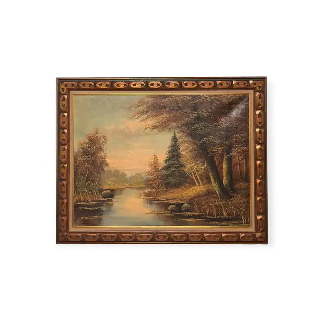
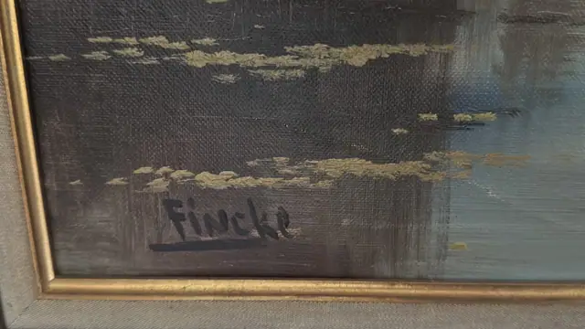
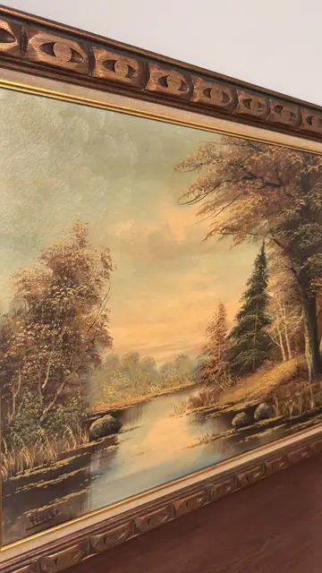
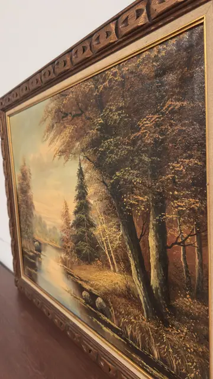

Paintings & Prints
Autumn River Landscape Oil Signed Fincke, Signed, Framed
Fincke · mid to late 20th century
Price Upon Request




About the Item
Fincke. A warm-toned oil landscape: a narrow river runs from the middle distance to the lower left, mirroring a pale gold and grey-blue sunset sky, flanked by rust and ochre deciduous trees and one tall dark conifer at right. Foreground banks are worked in dry, scrubby strokes of umber and straw, with scattered boulders at the water's edge. The paint is thinly brushed over a visible canvas weave with lighter impasto in the clouds and the sunlit foliage. Medium: oil on canvas. Signed lower left of the canvas, in dark blue paint with an underline, reading "Fincke". Inscribed on the reverse or mount: Fincke. Condition: Surface glare and a slightly dull, possibly dirty varnish; no tears, punctures or flaking visible; frame ornament shows minor rubbing.
Details
- Creator:
- Fincke
- Creation Year:
- mid to late 20th century
- Dimensions:
- Height: 29.0 in (73.66 cm)
Width: 36.5 in (92.71 cm)
outside of frame - Medium:
- oil on canvas
- Period:
- 20Th
- Condition:
- Offered in the condition shown in the photographs.
- Reference Number:
- VO-102
- Documentation:
- no certificate or label photographed; the back was not shown
- Gallery Location:
- Fincke